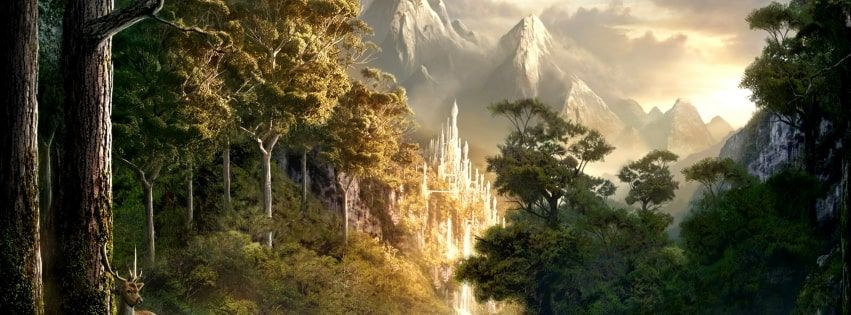

Agenda
| Dia 1 | ||
|---|---|---|
| Horário | Palestra | Palestrante |
| 9:00 - 10:00 | Abertura do evento e apresentação dos palestrantes | Comitê Organizador |
| 10:15 - 11:45 | "Introdução à Terra-média" | Professor Gandalf |
| 12:00 - 13:00 | Almoço | |
| 13:15 - 14:45 | "A História dos Anéis do Poder" | Elrond |
| 15:00 - 16:30 | "A Magia de Tolkien" | Radagast, o Castanho |
| 16:45 - 18:00 | Perguntas e respostas com os palestrantes | Comitê Organizador |
| Dia 2 | ||
|---|---|---|
| Horário | Palestra | Palestrante |
| 9:00 - 10:30 | "A Jornada de Frodo e Sam" | Samwise Gamgee |
| 10:45 - 12:15 | "Os Elfos e a Sociedade em Lothlórien" | Galadriel |
| 12:30 - 13:30 | Almoço | |
| 13:45 - 15:15 | "A Cultura dos Anões em Erebor" | Gimli |
| 15:30 - 17:00 | "Arwen e o Amor em Terra-média" | Arwen Undómiel |
| 17:15 - 18:30 | Exibição de filmes relacionados ao Senhor dos Anéis | Comitê Organizador |
| Dia 3 | ||
|---|---|---|
| Horário | Palestra | Palestrante |
| 9:00 - 10:30 | "Mordor: O Coração das Trevas" | Frodo Bolseiro |
| 10:45 - 12:15 | "Rohan e os Cavaleiros de Théoden" | Éowyn |
| 12:30 - 13:30 | Almoço | |
| 13:45 - 15:15 | "A Floresta das Trevas e a Jornada de Legolas" | Legolas |
| 15:30 - 17:00 | "A Batalha de Helm's Deep" | Théoden |
| 17:15 - 18:30 | Encerramento do evento e agradecimentos | Comitê Organizador |